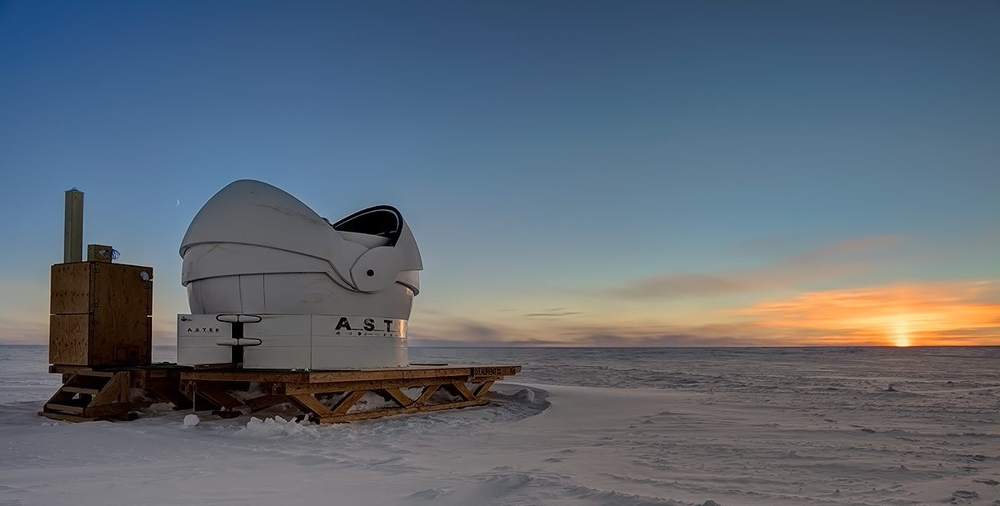
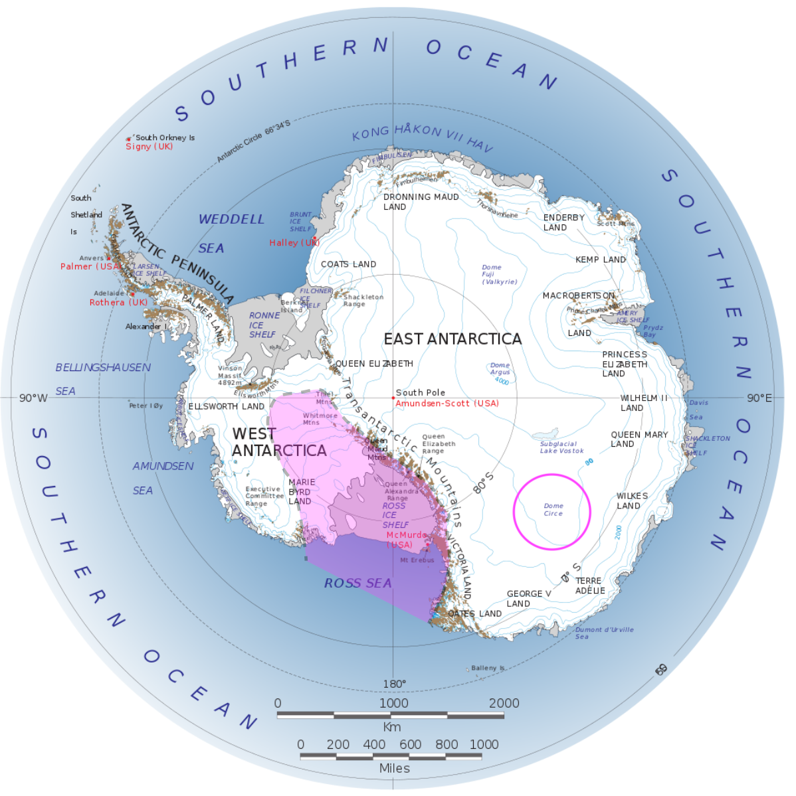

ASTEP

ASTEP (Antarctica Search for Transiting ExoPlanets) is located in Antartica, one of the most remote places on Earth and home to the South Pole. With average temperatures around -50°C it is perhaps not the first place you would think of when going stargazing! Nevertheless, it has several advantages for astronomers. First, for several months of the year there is continuous night at the South Pole, caused by the tilt of the Earth on it's axis. For us scientists, this gives us uninterrupted observations of long-lasting astronomical events.
Second, there are spaces, so-called domes, that are practically cloud free. These domes are not to be confused with the dome which protects a telescope; instead they are areas of the Antarctic ice sheet which have high elevation, rather like enormous glaciers. At the top of these Domes, the atmosphere is also very thin. This means that in Antarctica stars are hardly seen to twinkle at all. While twinkling stars might be pretty to look at with the naked eye, they can cause quite a headache for astronomers! We quantify the amount of twinkle that occurs at a given location and call it the 'seeing'. Dome Circle (or Dome C, circled in the map below) has excellent seeing, so ASTEP sits right on top.

Third, it is one of the driest places on Earth. That means ASTEP can (and does) observe in visible, infrared and radio . In fact, any observatory in this place is the closest thing you can get on Earth to an actual space telescope.
ASTEP is a robotic telescope. It’s crucial for a telescope at this location to be robotic – operating them manually during the winter months is impossible as people can only be outside the research station for a few minutes at a time!